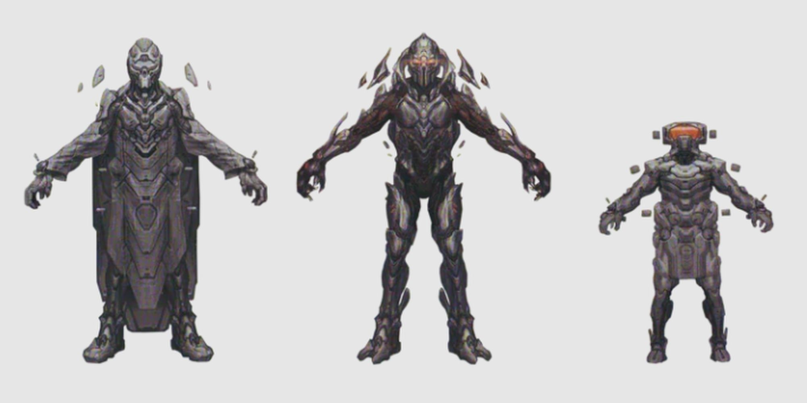

Los Forerunners - La primera raza
Orígenes de los Forerunners
Los Forerunners fueron una antigua civilización avanzada que jugó un papel crucial en la historia del universo de Halo. Su legado incluye la creación de la tecnología de los anillos Halo y su lucha contra el Flood, así como su eventual extinción.
Los Forerunners eran conocidos por su dominio de la tecnología y su filosofía de proteger la vida en la galaxia, lo que los llevó a crear los anillos Halo como una medida de contención contra el Flood.
Tipos de Forerunners
Forerunners Precursores
Los Precursores fueron los ancestros de los Forerunners, considerados como los creadores de la vida en la galaxia. Su tecnología y filosofía influyeron en la civilización Forerunner.
- Número estimado: Desconocido
- Mejoras: Tecnología avanzada y biología única
- Legado: Creación de los Forerunners y su tecnología
Forerunners Guerreros
Los Guerreros Forerunners eran la clase militar de la civilización, encargados de proteger su imperio y combatir amenazas como el Flood.
- Número estimado: Desconocido
- Mejoras: Armamento avanzado y habilidades de combate
- Armadura: Armaduras de combate Forerunner
- Éxitos notables: Participación en la guerra contra el Flood
Forerunners Constructores
Los Constructores eran responsables de la creación de la tecnología Forerunner, incluyendo los anillos Halo y otras estructuras avanzadas.
- Número estimado: Desconocido
- Mejoras: Maestría en ingeniería y construcción
- Armadura: Armaduras de trabajo Forerunner
- Tácticas: Creación de tecnología para la defensa de la galaxia
Forerunners Sabios
Los Sabios eran la clase intelectual de los Forerunners, encargados de la filosofía y la toma de decisiones estratégicas para la civilización.
- Número estimado: Desconocido
- Mejoras: Conocimiento avanzado y habilidades diplomáticas
- Armadura: Armaduras ceremoniales Forerunner
- Organización: Consejo Forerunner
Comparación de Clases Forerunner
| Clase | Rol | Número | Selección | Mejoras | Tasa de éxito |
|---|---|---|---|---|---|
| Precursores | Creador de vida | Desconocido | Desconocido | Extremadamente avanzada | Desconocida |
| Guerreros | Protección militar | Desconocido | Seleccionados por habilidad | Extensivas | Desconocida |
| Constructores | Creación de tecnología | Desconocido | Seleccionados por habilidad | Extensivas | Desconocida |
| Sabios | Consejo y estrategia | Desconocido | Seleccionados por conocimiento | Extensivas | Desconocida |
Línea de Tiempo de los Forerunners
Antes de la guerra
Los Forerunners establecen su civilización y comienzan a explorar la galaxia.
Creación de los anillos Halo
Los Forerunners crean los anillos Halo como medida de contención contra el Flood.
Guerra contra el Flood
Los Forerunners luchan contra el Flood en una guerra devastadora.
Extinción de los Forerunners
Los Forerunners se sacrifican para activar los anillos Halo y detener al Flood.
Impacto de los Forerunners
Los Forerunners han tenido un profundo impacto en el universo de Halo:
- Militar: Su tecnología y estrategias cambiaron el curso de la guerra contra el Flood.
- Tecnológico: Creaciones como los anillos Halo han influido en la tecnología moderna.
- Social: Se convirtieron en símbolos de esperanza y protección para la vida en la galaxia.
- Ético: Sus decisiones sobre la vida y la muerte han generado debates éticos en la historia.
- Cultural: Su legado ha inspirado a generaciones futuras en la lucha por la supervivencia.
Aunque desaparecieron, el legado de los Forerunners sigue vivo en la lucha por la paz y la protección de la galaxia.